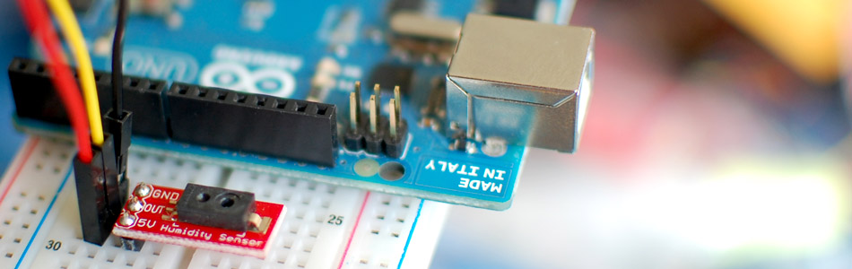

Sensing Humidity With The HIH-4030 + Arduino

Well luckily measuring relative humidity is pretty simple with the HIH-4030. The HIH-4030 is a low-power, analog output sensor.
Hooking It Up
Hooking up the HIH-4030 to your arduino is super simple, just power it with 5V / Ground, and connect the out to an analog pin on the arduino. You may be able to run it with 3.3v, I haven't tried it. But if you do, you need to change the "supplyVolt" value in the code from 5.0 to 3.3.

Code
Note that because determining relative humidity requires knowing an accurate temperature, you are going to want to use this in conjunction with a thermometer. To simplify things for you, the code just has a hard coded temperature that we pass to a function to get the humidity. You will want to replace that value with the value from your thermometer.
Also note that the sensor is sensitive to light, so for best performance, shield it from bright light.
Suggested Thermometers (with article):
TMP102
DS18B20
//From the bildr article http://bildr.org/2012/11/hih4030-arduino/ int HIH4030_Pin = A0; //analog pin 0 void setup(){ Serial.begin(9600); } void loop(){ //To properly caculate relative humidity, we need the temperature. float temperature = 25; //replace with a thermometer reading if you have it float relativeHumidity = getHumidity(temperature); Serial.println(relativeHumidity); delay(100); //just here to slow it down so you can read it } float getHumidity(float degreesCelsius){ //caculate relative humidity float supplyVolt = 5.0; // read the value from the sensor: int HIH4030_Value = analogRead(HIH4030_Pin); float voltage = HIH4030_Value/1023. * supplyVolt; // convert to voltage value // convert the voltage to a relative humidity // - the equation is derived from the HIH-4030/31 datasheet // - it is not calibrated to your individual sensor // Table 2 of the sheet shows the may deviate from this line float sensorRH = 161.0 * voltage / supplyVolt - 25.8; float trueRH = sensorRH / (1.0546 - 0.0026 * degreesCelsius); //temperature adjustment return trueRH; }
Article taken from bildr.org with minor changes - I am the original author of this content